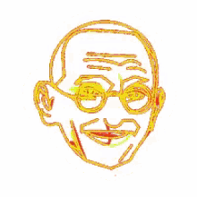
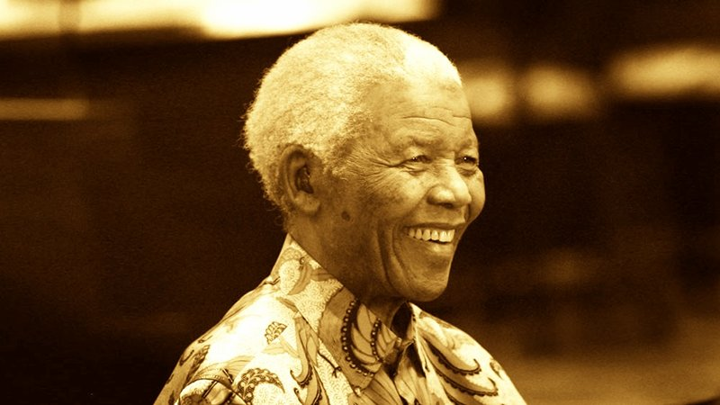

|  |
“I have cherished the ideal of a democratic and free society in which all persons live together in harmony and with equal opportunities. It is an ideal which I hope to live for and to achieve. But if need be, it is an ideal for which I am prepared to die.” |
|
Champions of Human Rights Nelson Mandela |
|
|

Nelson Mandela, one of the most recognizable human rights symbols of the twentieth century,
is a man whose dedication to the liberties of his people inspires human rights advocates throughout the world.
Born in Transkei, South Africa, Mandela was the son of a tribal chief,
and educated himself with a university degree and law degree. In 1944,
he joined the African National Congress (ANC) and actively worked to abolish
the apartheid policies of the ruling National Party. On trial for his actions, Mandela declared,
“I have fought against white domination, and I have fought against black domination. I have cherished
the ideal of a democratic and free society in which all persons live together in harmony and with
equal opportunities. It is an ideal which I hope to live for and to achieve. But if need be, it is
an ideal for which I am prepared to die.”
Sentenced to life imprisonment, Mandela became a powerful symbol of resistance for the rising anti-apartheid movement,
repeatedly refusing to compromise his political position to obtain his freedom. Finally released in February 1990, he
intensified the battle against oppression to attain the goals he and others had set out to accomplish almost four decades earlier.
In May 1994, Mandela was inaugurated as South Africa’s first black president, a position he held until 1999.
He presided over the transition from minority rule and apartheid, winning international respect for his advocacy
of national and international reconciliation. An international celebration of his life and rededication to his
goals of freedom and equality was held in 2008, on the occasion of his 90th birthday.
“If you talk to a man in a language he understands, that goes to his head. If you talk to him in his language,
that goes to his heart.” —Nelson Mandela
|
Home / Privacy Policy / Terms of Service / Feedback
By Bhoopendra Yadav
CBSE© / All Rights Reserved